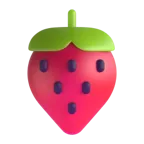
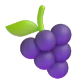
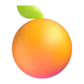
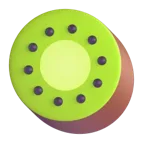

My English World
Book 4 · My Picture Dictionary

Unit 9
Fruit
Tap any picture or sentence to listen.
🖼️ Look and say
strawberry

grapes

orange
lemon
cherry
pear
peach
mango
melon

kiwi
▶ Play all words
💬 Words in sentences
Strawberries are red and sweet.
🔊
I like green grapes.
🔊
A lemon is sour.
🔊
Mangoes are my favourite fruit.
🔊
▶ Play all sentences
‹ Food
All units
Vegetables ›